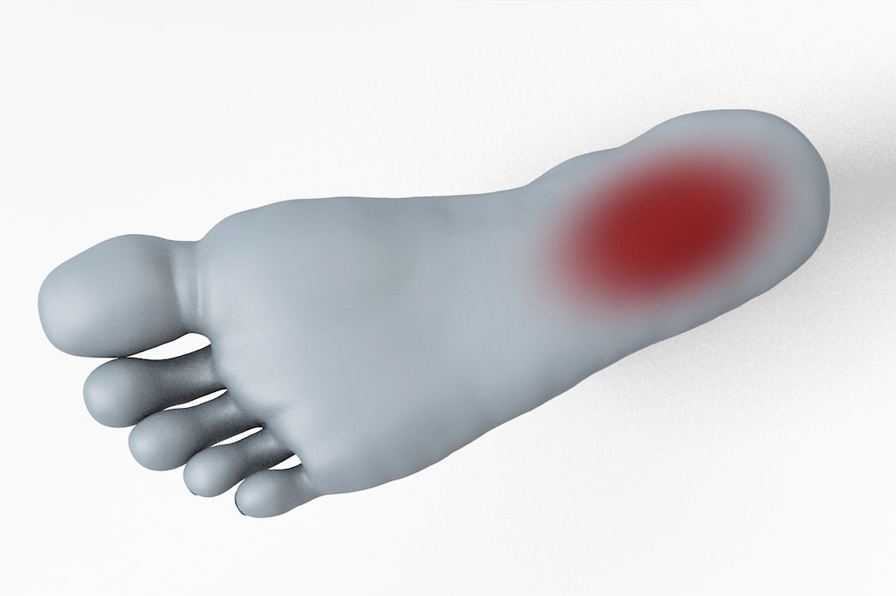

Most common feet problems are...
Athlete's Foot
It is a fungal skin infection. Symptoms of this condition include a scaly and itchy rash, stinging, blisters. It's contagious and can be spread via contaminated towels, clothing or floors. Infection often comes back even after treatment.
Bunions
It's a bony painful lump on the outside of the big toe. It's caused by prolonged pressure on the big toe joint. A bump forms when joint gets out of alignment. If toe spacers, appropriate footwear or bunion pads don't help, surgery is needed.
Corns
A corn develops in response to pressure and friction, and it's a build up of hyperkeratinised skin. It can occur anywhere on the foot and cause a lot of pain.
Ingrown toenails
It's a common condition in which the corner or side of a toenail grows into the soft flesh. It usually affects the big toe and results in pain, swelling, inflamed skin and eventually infection.
Plantar Fascitis
It's one of the most common causes of heel pain. It is caused by straining the part of your foot that connects your heel bone to your toes (plantar fascia).
